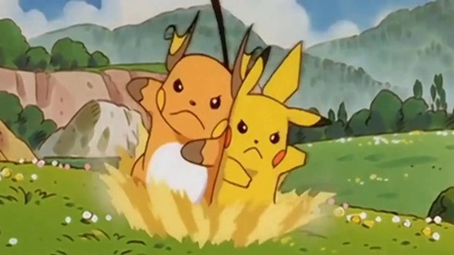
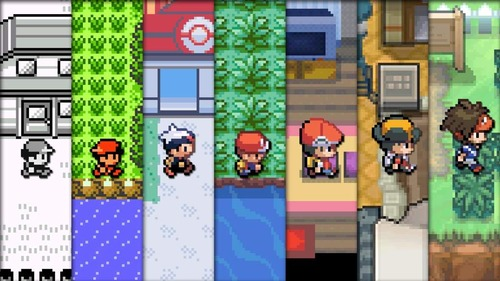

What is Pokémon?
In the world of pokémon an array of monsters called pokémon roam the world. Pokémon can be wild or tame and trained. A pokémon can be cute or scary looking and sometimes both.Since pokémon have powers and a fighting nature they battle with other pokémon by being trained by humans they trust to heal them after a battle.
Pokémon Video Games
Pokémon has video games with the formula consisting of the player begining as a new pokémon trainer that picks one of three pokémon. The pokémon you choose will stay on your journey to becoming a skilled trainer that fights other pokémon trainers. During the journey there will be legends and myths that you discover. There will also be bad organizations you fight because they try to take advantage of the real myths and legends.
